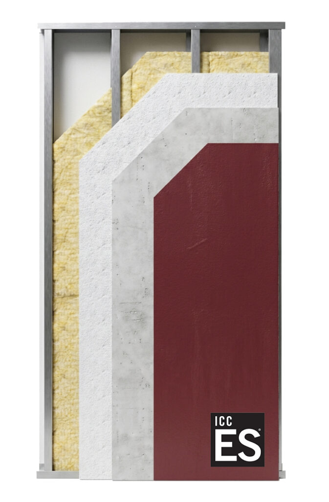

A steel-framed, fully non-combustible panel system rated 1-HR and 2-HR fire-resistive and WUI compliant: engineered for wildfire-prone and high-risk construction across California.
4C SAFE® is our steel-framed panel system, non-organic and extremely resilient, fully non-combustible, and rated both 1-HR and 2-HR fire-resistive, WUI compliant. It's applicable to all construction types, making it the system of choice when maximum fire protection and durability outweigh upfront cost. This is the system behind our Altadena and Pacific Palisades fire rebuild projects, and you can see it in action in our Borrego Springs assembly time-lapse. Compare it to our wood-framed 4C ECO™ system on the Systems overview page.
| Specification | Detail |
|---|---|
| Frame material | Steel |
| Combustibility | Fully non-combustible |
| Fire rating | 1-HR & 2-HR fire-resistive, WUI compliant |
| Construction types supported | All types (I – V) |
| ICC-ES listing | ESL-1695 · Patent Pending |
| Recommended for | Wildfire-prone and high-risk areas, fire rebuilds |
| Cost profile | Higher upfront cost, built for long-term resilience |

Fully non-combustible construction, rated 1-HR and 2-HR fire-resistive and WUI compliant, for projects where fire risk is the top design constraint.
Unlike wood-framed systems limited to Type V, 4C SAFE®'s steel frame is applicable across all construction types.
Despite the added resilience, 4C SAFE® still cuts onsite construction time by up to 30% versus conventional framing.
4C SAFE® is the system behind our fire rebuild program in Altadena and the Pacific Palisades, and was first installed on our Borrego Springs project. Every 4C SAFE® build is delivered through our network of partner architects, GCs, and developers.
View Project Portfolio4C SAFE® is fully non-combustible, WUI compliant, and carries ICC-ES listing ESL-1695 (patent pending), making it well suited to construction in wildfire-prone areas. Confirm specific local requirements with your project's building department, or contact us for help.
4C SAFE®'s steel-framed, non-combustible construction is applicable to all construction types, unlike wood-framed systems that are typically limited to Type V.
Generally yes. 4C SAFE® carries a higher upfront cost in exchange for maximum fire protection and durability. For projects where fire risk isn't the primary driver, 4C ECO™ may offer better budget control.
4C SAFE® integrates with your architect's existing design, so there's no need to redesign a custom home around the panel system. Panels arrive pre-labeled and pre-engineered to your plans, and the system is sold exclusively through partners such as architects, general contractors, and developers.
No. 4C SAFE® panels are designed to go up without heavy equipment, and the pre-labeled, pre-engineered panels are built to integrate with a standard framing crew's workflow, cutting onsite construction time by up to 30% versus stick-framing.
4C SAFE® is built to integrate with your project's existing design, financing, and permitting process, so switching to the system typically doesn't require starting over. Talk to your architect or GC early so the panel specifications can be reflected in your permit set.
4C SAFE® is sold exclusively through partners, not direct to homeowners. Architects, general contractors, developers, and material vendors can contact our team to get started, or homeowners can ask their architect or GC to specify 4C SAFE® for their next build.
4C SAFE® panels are manufactured at our headquarters at 2447 Industrial Parkway, Hayward, CA 94545, then delivered pre-labeled and pre-engineered to job sites across California.
Talk to our team about 4C SAFE® for your next fire-rebuild or high-risk project.